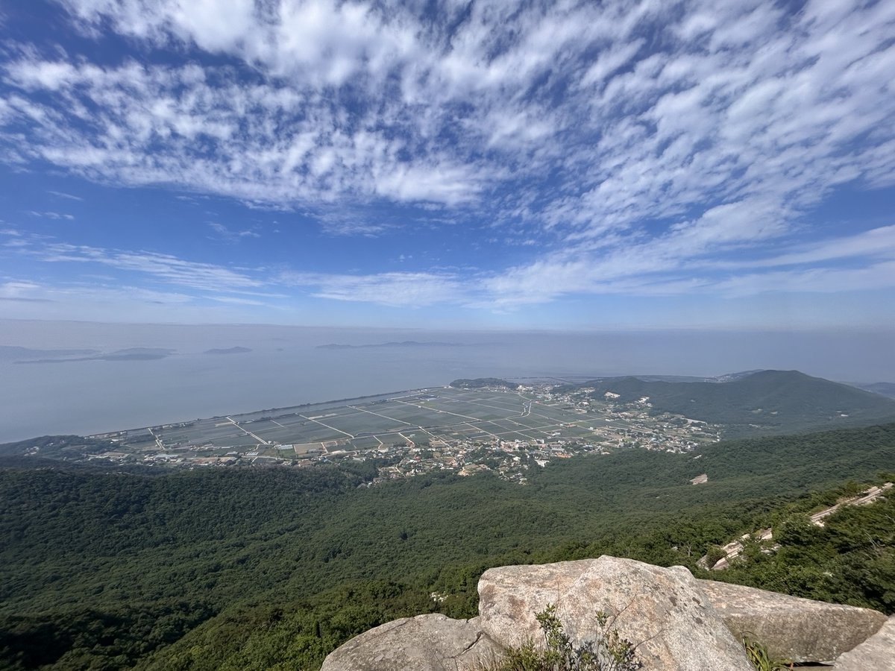
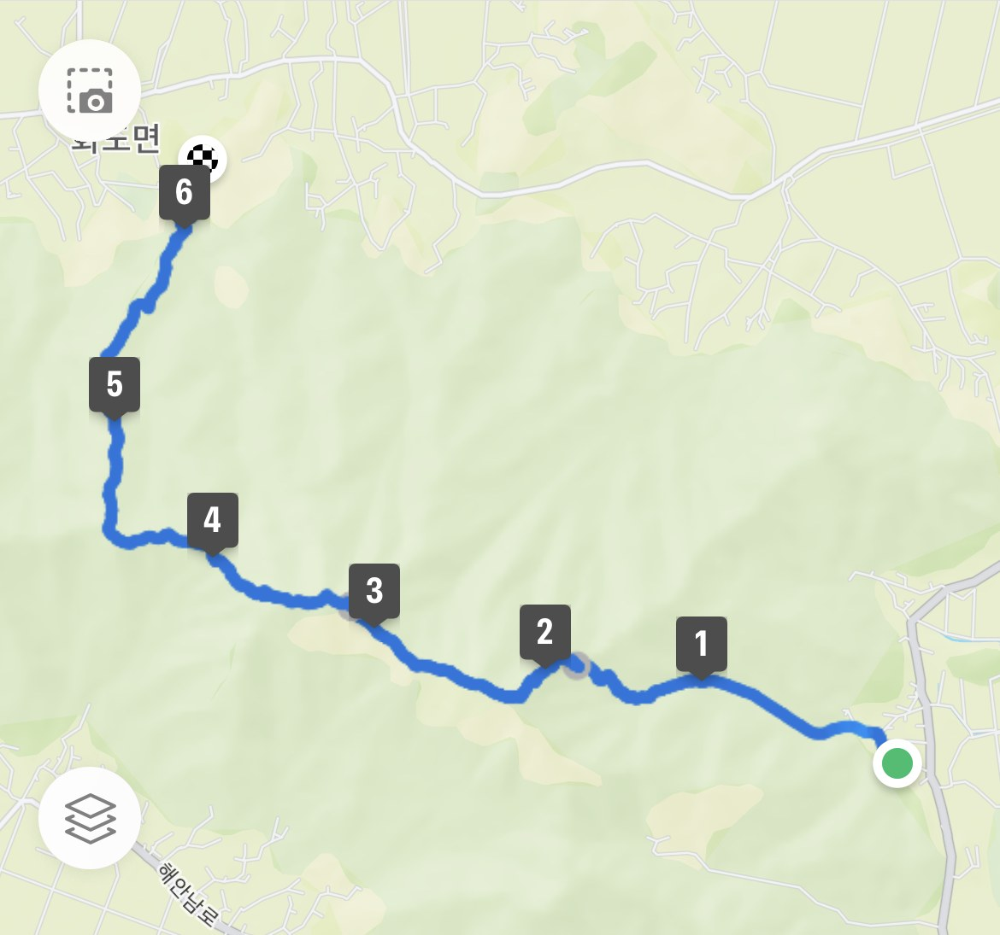
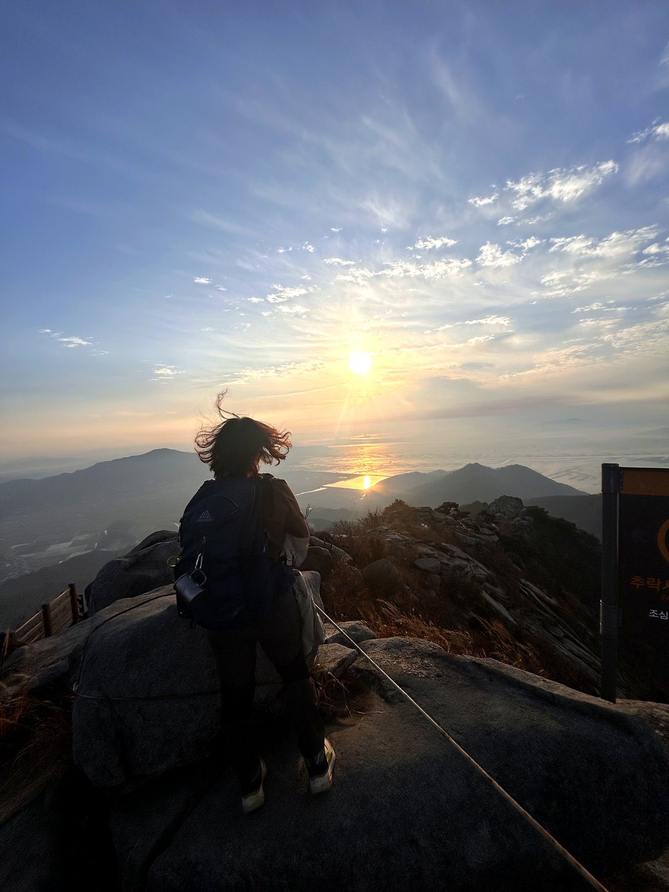
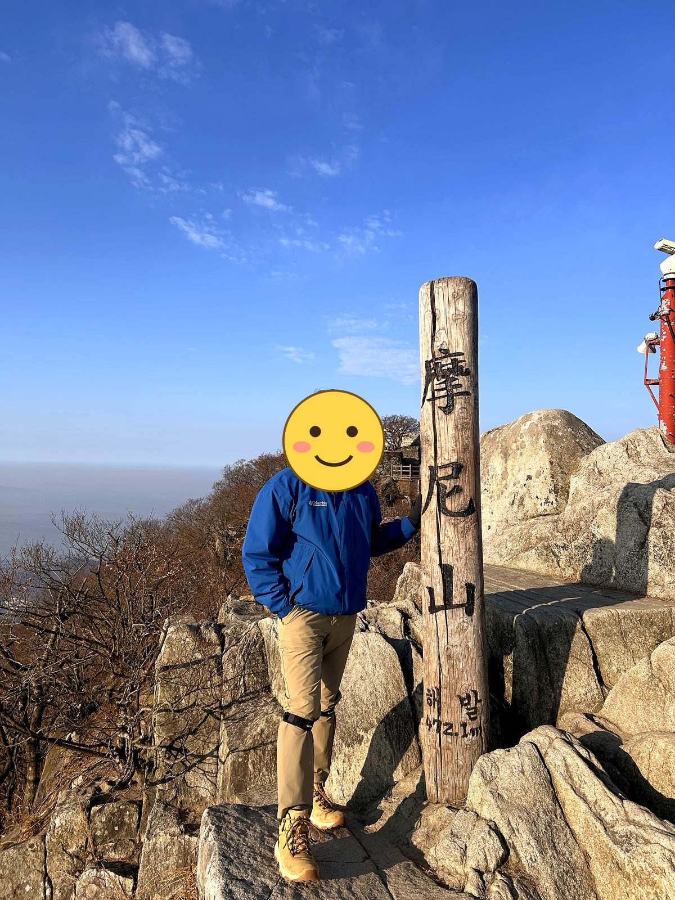
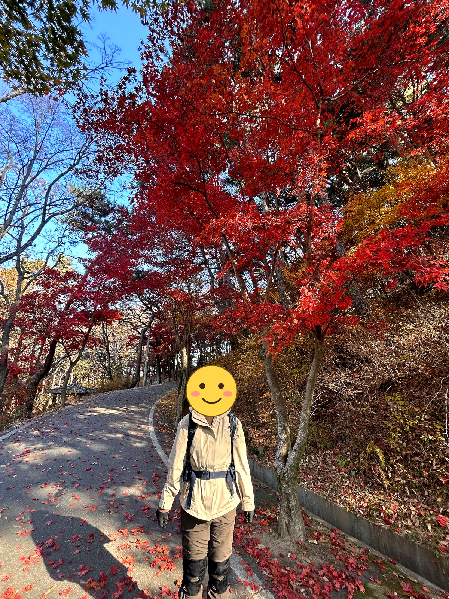
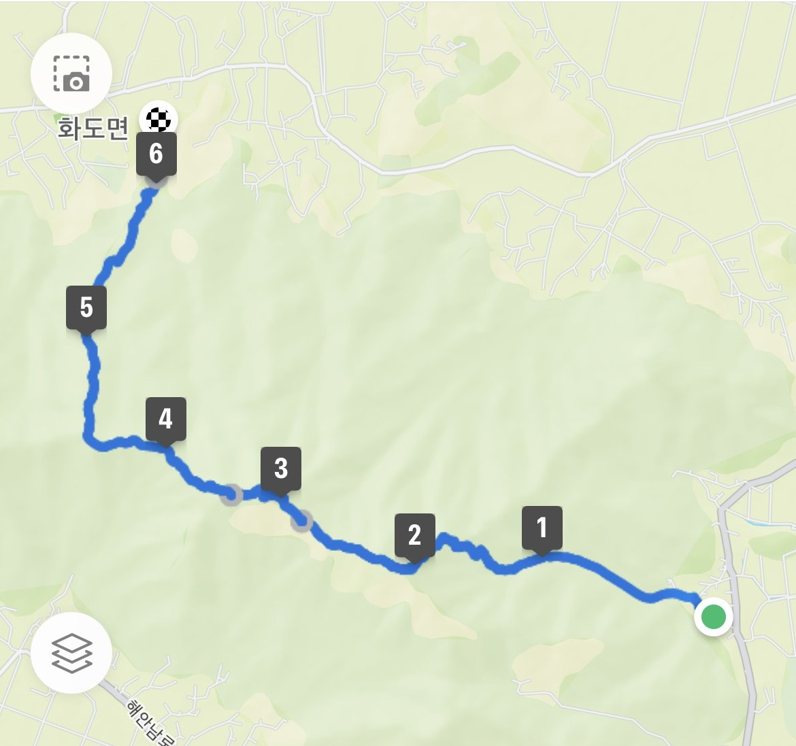
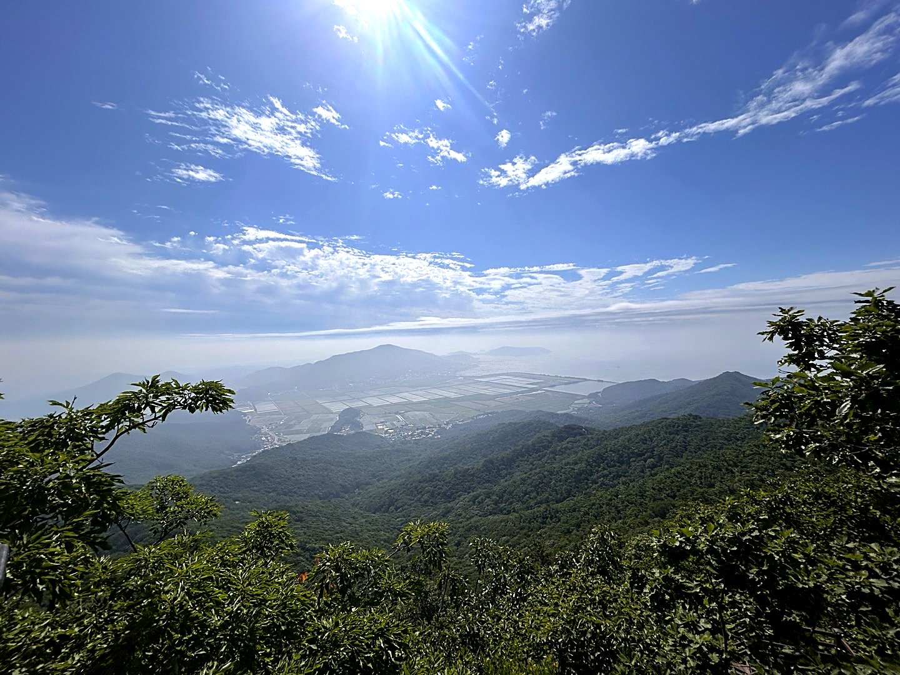
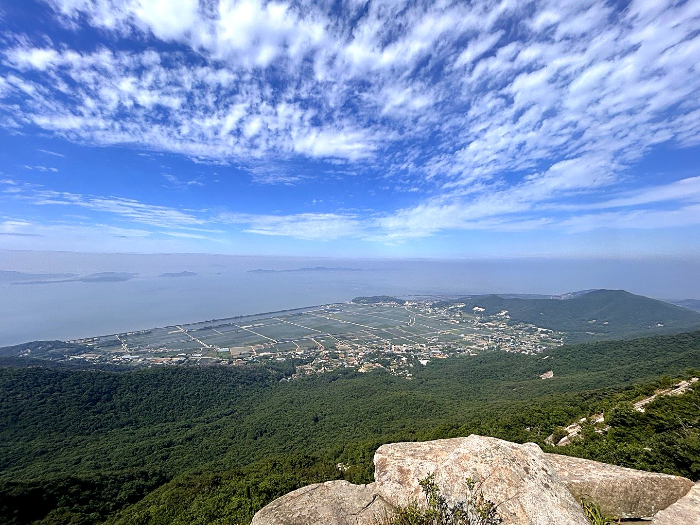
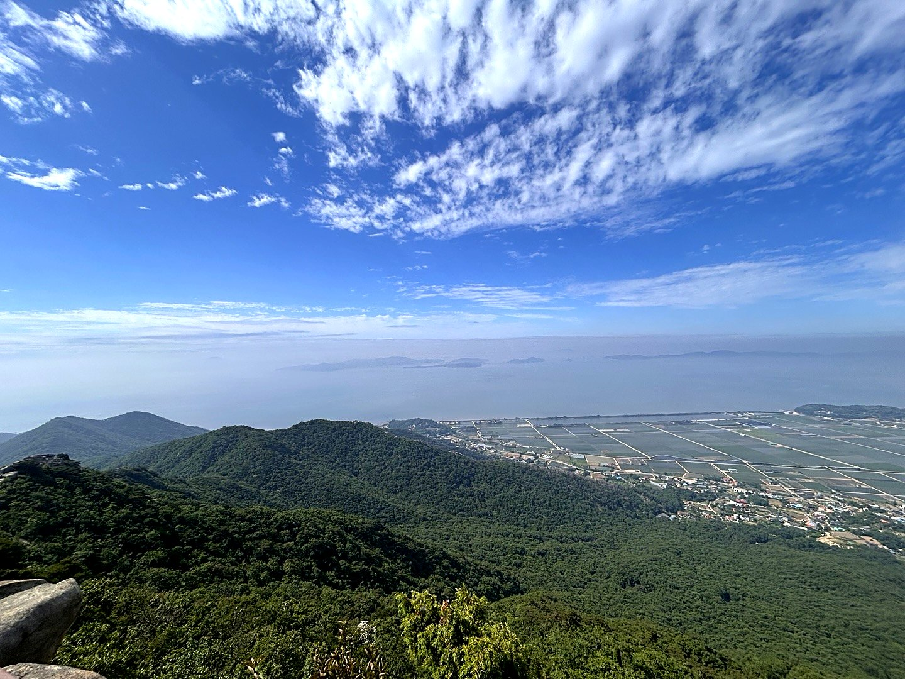

마니산은 강화도에서 가장 높은 산이자, 정상에 참성단이 있는 특별한 산입니다. 단군이 하늘에 제사를 지내던 자리로 전해지며, 지금도 전국체전 성화를 이곳에서 채화합니다.
코스는 크게 계단로와 단군로로 나뉩니다. 계단로는 1004계단을 따라 개미허리·헐떡고개를 지나 참성단으로 바로 붙는 최단 코스입니다. 이름 그대로 계단이 끝없이 이어집니다.
단군로는 편도 3.6km, 1시간 50분으로 조금 더 길지만 능선길과 흙길이 많아 걷기 편합니다. 서해와 강화 들녘을 보며 천천히 오르기에는 이쪽이 낫습니다.
등반기록
이른 아침에 올라 정상목 앞에서 한 컷, 내려오는 길엔 붉은 단풍
아침 햇살 속 정상
오전 7시 1분에 출발해서 6월과 같은 길로 능선을 따라 걷고 화도면 쪽으로 내려온 날이에요. 거리도 시간도 지난번과 거의 똑같이 나왔네요.



내려오는 길, 늦가을 단풍

동쪽 들머리에서 올라 능선을 따라 걷고 화도면 쪽으로 하산
능선에서 내려다본 강화 들판과 서해
오전 8시 9분에 출발해서 능선을 따라 서쪽으로 쭉 걸어 화도면 쪽으로 내려온 날이에요. 하늘에 구름이 예쁘게 깔려서 걷는 내내 눈이 즐거웠어요.




이 산의 포인트
- 참성단 — 단군 제천의 자리, 전국체전 성화 채화지
- 계단로의 1004계단
- 단군로 — 능선과 흙길이 많은 완만한 코스
- 정상에서 서해와 강화 들녘 조망
등산 코스
| 코스 | 거리 | 소요 | 난이도 |
|---|---|---|---|
| 계단로 (최단) 마니산 매표소 → 1004계단(개미허리·헐떡고개) → 참성단 → 정상 |
약 2.5km(편도) | 1시간 20분 내외 | 중 |
| 단군로 매표소 → 단군로 능선 → 참성단 → 정상 |
약 3.6km(편도) | 1시간 50분 | 중 |
| 단군로 ↔ 계단로 순환 단군로로 올라 계단로로 하산 |
약 6km | 2시간 30분~3시간 30분 | 중 |
| 능선 종주 (동쪽 들머리 → 정상 → 화도면) 🥾 나의 기록 동쪽 들머리 → 바위 능선 → 마니산 정상 → 참성단 → 화도면 방면 하산 |
약 6.5km | 3시간 40분 내외(휴식 포함) | 중 |
인증장소
참성단 일대의 정상 표지에서 인증합니다. 참성단은 사적이므로 위로 올라가지 말고 지정된 곳에서 촬영하세요.
가는 길
- 자가용
- 마니산국민관광지 주차장을 이용합니다. 입장료가 있습니다.
- 대중교통
- 강화터미널에서 마니산 방면 버스를 이용합니다.
주차장
- 마니산국민관광지 주차장(화도)인천 강화군 화도면 흥왕리
계단로·단군로가 모두 여기서 시작하는 대표 들머리입니다.
- 정수사 주차장인천 강화군 화도면 사기리
함허동천 방면에서 오를 때 이용합니다.
- 함허동천야영장 주차장인천 강화군 화도면 사기리
능선을 길게 걷고 싶을 때 고르는 들머리입니다.
주차 요금과 면수는 자주 바뀌고 성수기에는 임시 주차장·셔틀이 운영되기도 합니다. 출발 전에 지도 앱이나 공원 사무소로 한 번 더 확인하세요.
맛집
강화는 순무김치와 밴댕이의 섬입니다. 밴댕이회무침과 젓국갈비가 강화에서만 먹는 음식이고, 갯벌에서 나는 바지락으로 칼국수를 끓입니다. 강화 인삼과 속노랑고구마도 유명합니다.
- 범호고향밥상들머리에서 0.1km인천광역시 강화군 화도면 마니산로675번길 15
- 하얀꽃메밀들머리에서 3.1km인천광역시 강화군 화도면 해안남로 1833
- 강화손칼국수 본점들머리에서 3.2km인천광역시 강화군 양도면 강화남로 678
- 유진면옥들머리에서 2.7km인천광역시 강화군 양도면 강화남로 606-1
- 서산갯마을들머리에서 3.0km인천광역시 강화군 화도면 해안남로2845번길 10
한국관광공사에 등록된 음식점입니다. 맛집 순위가 아니며, 영업시간과 휴무일은 바뀔 수 있으니 먼 길이라면 미리 전화해 보세요.
언제 가면 좋은가
봄가을이 가장 좋습니다. 서해 조망이 트이는 맑은 날을 고르세요. 계단로는 여름 그늘이 적어 덥습니다.
알아두면 좋은 것
- 단군로로 올라 계단로로 내려오면 오르막 계단 부담을 줄일 수 있습니다.
- 참성단은 문화재이므로 보호 구역 안으로 들어가지 마세요.
- 섬이라 바람이 강한 날이 많습니다. 바람막이를 챙기세요.